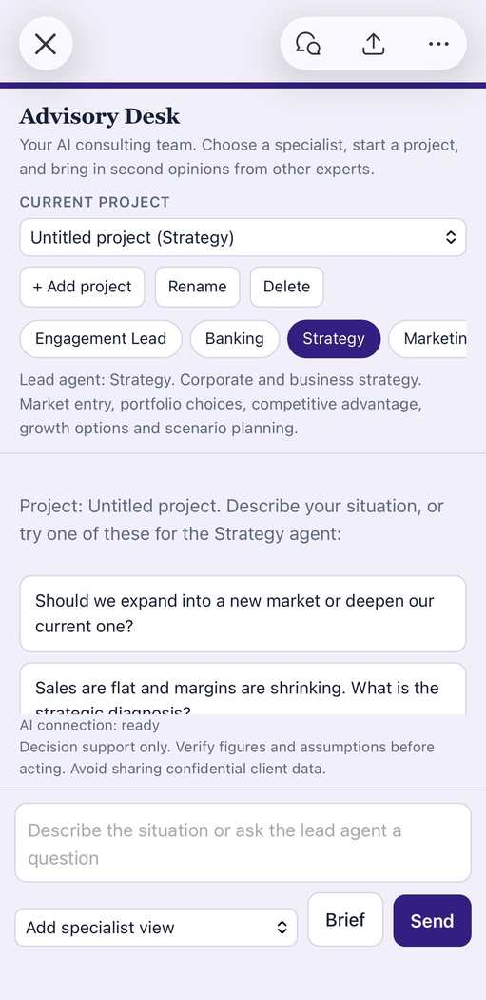

AI / Multi-agent prototype
Advisory Desk
A consulting workspace designed around specialist AI agents. Users can organize engagements into projects, consult banking, strategy and marketing specialists, and request second opinions.
Concept and prototype. Not presented as a production consulting service.